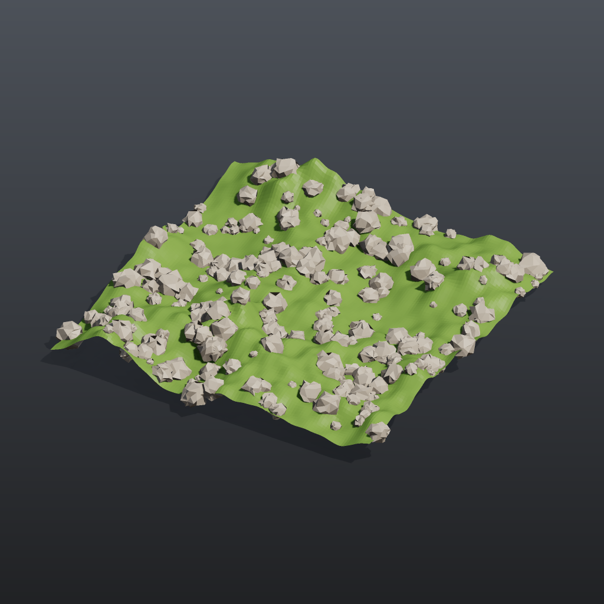

Tutorial 2: scatter and copy#
Scatters points over a noisy ground plane, gives every point a random size and rotation, and copies a small rock onto each point. This is the basic instancing pattern behind most set dressing: a surface, a point cloud with per-point attributes, and Copy to Points.

Load it#
Drag example_workflows/tutorial_02_scatter_copy.json onto the ComfyUI canvas and press Queue. No model files or other custom nodes are needed.
Step by step#
Ground
- Grid (PCG) makes a 16 x 16 grid with 120 x 120 points.
- Attribute Noise (PCG) ("Rolling ground") adds a terrain-fractal Perlin noise to
P, on Y only (use_xanduse_zare off), amplitude 1.2, element size 7. - Color (PCG) ("Ground colour") paints it green.
Points
- Scatter (PCG) places 250 random points on the noisy ground (seed 7). The points carry the surface normal
Nand the other interpolated attributes. - Attribute Randomize (PCG) ("Random size (pscale)") writes the point attribute
pscalewith a uniform value between 0.15 and 0.6. - A second Attribute Randomize (PCG) ("Random rotation (orient)") switches Mode to
orientand writesorient, a uniformly random rotation quaternion per point.
The rock and the copy
- Sphere (PCG) ("Rock base shape") is a coarse sphere (10 columns, 7 rows); Point Jitter (PCG) ("Roughen", scale 0.35) moves its points randomly so it stops looking like a sphere. Color (PCG) ("Rock colour") makes it grey.
- Copy to Points (PCG) puts one copy of the rock on each of the 250 points. With Transform Using Target Point Orientations on (the default) each copy is scaled by
pscaleand rotated byorient, as in Houdini. - Merge (PCG) ("Ground + rocks") combines both, and Geometry Preview (PCG) plus Viewport (PCG) show the result.
Worth tweaking#
| Node | Parameter | Effect |
|---|---|---|
| Scatter | count, rand_seed | Number of rocks and their layout. Turn on use_relax to push the points apart. |
| Random size (pscale) | min_x, max_x, distribution | Size range; the power distribution with an exponent above 1 gives many small rocks and a few large ones. |
| Random rotation (orient) | (whole node) | Bypass it and the copies are oriented by the scattered N and the default up vector instead, so every rock sits on the slope the same way. |
| Roughen | scale, rand_seed | How lumpy the rock is. |
| Rolling ground | amplitude, element_size_* | Height and width of the hills. |
Any geometry can replace the rock: wire a different chain into the source input of Copy to Points.
See also#
- Geometry concepts: point attributes such as
pscale,orientandN. - Tutorial 4: for-each variations: make several different rocks and pick one per point.
- Rock garden: the same idea at full scale, with a rock library and weighted scattering.
- Next: Tutorial 3: attributes and wrangle.